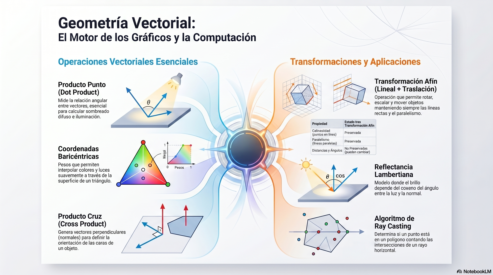
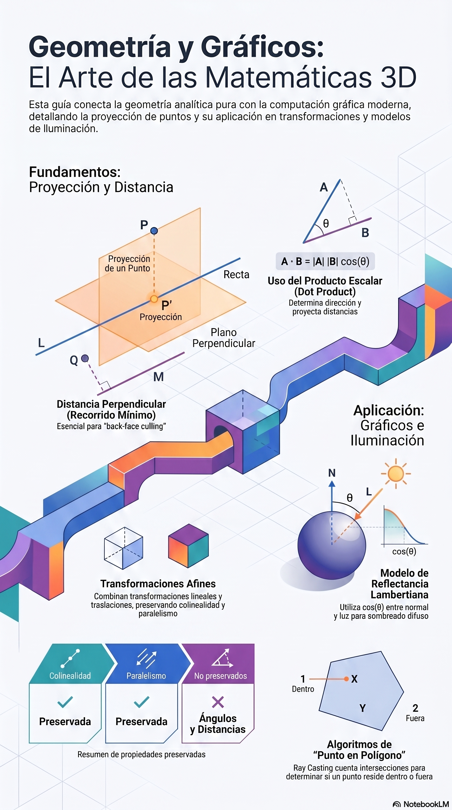
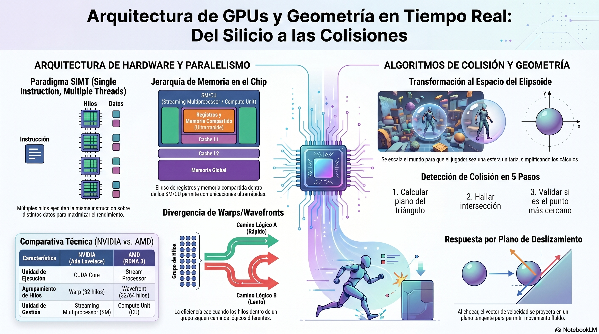

Tema 1 — Computación Gráfica
La geometría aplicada es el lenguaje matemático detrás de cada píxel en pantalla. En esta sección exploramos cómo las GPUs modernas utilizan álgebra vectorial —normalización, producto interno y producto vectorial— para simular iluminación, gestionar cámaras y optimizar el renderizado mediante técnicas como el Backface Culling. Comprendemos además el paradigma de paralelismo masivo SIMT que impulsa a NVIDIA y AMD, y las APIs de bajo nivel (Vulkan, WebGPU) que dan control directo sobre el hardware gráfico.
Visualiza en tiempo real cómo se comportan los vectores, matrices y proyecciones geométricas dentro de un motor gráfico. Alterna entre el modo ERROR (crudo) y CORREGIDO para entender el impacto de cada operación.
Documentos técnicos que sustentan los conceptos del simulador, desde la geometría vectorial hasta la arquitectura de GPUs.
📄 Vectorized Worlds — Geometría Vectorial Aplicada
Documento base de la clase. Detalla los seis operadores geométricos implementados en el simulador: normalización, producto interno (Lambert shading), producto vectorial, matrices de transformación, proyección de puntos y ray casting para detección de presencia en zonas complejas.
📄 Mathematics of Rendering — Fundamentos Matemáticos del Renderizado
Presentación complementaria que cubre la base matemática del pipeline de renderizado: transformaciones afines, cálculo de normales, modelos de iluminación (Phong, PBR) y el flujo completo de un vértice desde la CPU hasta el píxel final en pantalla.
📄 Silicon Geometry — Arquitectura de GPU y Detección de Colisiones
Documento avanzado que conecta la arquitectura interna del silicio de las GPUs modernas con los algoritmos de detección de colisiones en gráficos por computadora. Aborda cómo las unidades de cómputo paralelo (SIMT/SIMD) aceleran los tests de intersección geométrica (AABB, BVH, ray-triangle) empleados en motores de física y de renderizado en tiempo real.
Síntesis visual de los conceptos clave. Útiles como guía de referencia rápida durante el estudio y la práctica.



Episodios de audio para profundizar el tema: arquitectura GPU, programación de gráficos y el rol de la geometría aplicada en los motores de renderizado modernos.
Episodio Principal · Spotify
Nos sumergimos en los fundamentos técnicos de la programación de gráficos por computadora y la evolución del hardware de tarjetas de video. Exploramos la dualidad NVIDIA vs AMD (CUDA vs Stream Processors) bajo el paradigma SIMT. Analizamos niveles de abstracción de software: desde motores de alto nivel (Unreal Engine 5, Unity, Godot) hasta APIs de bajo nivel como Vulkan y WebGPU. Finalmente aterrizamos la teoría con geometría aplicada: producto interno para iluminación y producto vectorial para Backface Culling.
Episodio Complementario · Spotify
Podcast de apoyo al tema — Episodio 2
Episodio Complementario · Spotify
Podcast de apoyo al tema — Episodio 3